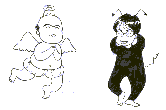

昨年１０月２０日、サイトオープン。オープンしてから、世に言う検索サイトにはいつごろ登録されるのかなと思っていた。しかし暫くして「そういうのは自分で登録に行かなければダメだよ」と聞く。
「なんだ、そうだったのか」というので１１月初め、ヤフーなど知ってる検索サイトに片っ端から登録しに行った。これで安心と思っていたが、１２月に入ってもどこにも登録されない。「なんじゃらほい」と思っている頃、「最近は麻雀サイトなんて山ほどある。そこでヤフーなど大手では、新規はめったに登録されない」という話を聞いた。
「ふ〜ん」と思っていたら、１２月も半ばを過ぎたころ、知人から「URL TODAYに登録されたよん」と突然のメール。URL TODAYには知人が推薦しておいてくれたという。「おお、それはタンキュウ ベルマッチ」と思ったが、肝心のσ（-_-）が登録しに行ったところは音沙汰なし。そのうち新年を迎え、こっちもバタバタ。そんな話もすっかり忘れていた。
昨日（3/1）、ある英文を翻訳する必要があってエキサイトの翻訳サービスを利用した。目的の作業が終わってから、ふと思いついて「浅見了 麻雀宝夢頁」で検索してみた。すると思いがけずヒットした。
「おお、あるではないか」というので、今度は前に登録しにいったサイトへ行って検索してみた。するとすべてでヒットした。ふ〜ん、やっぱり登録には時間がかかるんだ。
|